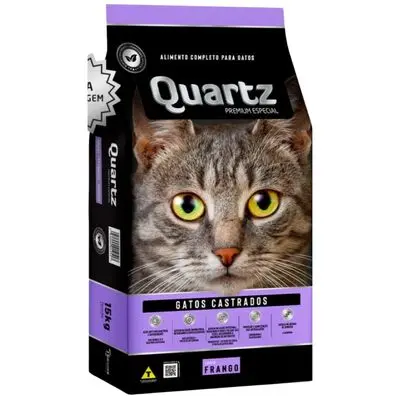

Ração para Gatos Adultos
Detalhes do Produto
- Marca
- PremiumCat
- Peso
- 10kg
- Indicação
- Gatos adultos de todas as raças
- Ingredientes Principais
- Salmão, frango, arroz, taurina
- Benefícios
-
- Controle de bolas de pelo
- Pelagem sedosa e brilhante
- Rico em taurina para saúde cardíaca
- Validade
- 12 meses
- Preço
- R$ 169,90
Descrição
Ração Premium desenvolvida especialmente para gatos adultos. Fórmula balanceada com alto teor de proteínas de qualidade, vitaminas e minerais essenciais. Ajuda a prevenir problemas urinários e controla a formação de bolas de pelo.